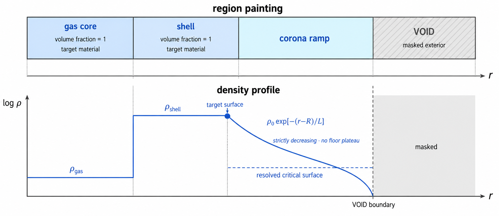

1D メッシュ: 格子と領域 reference
TENRYU の 1D 計算領域は、一様または傾斜配置のゾーニングと、球・円筒・平面の測度を備えた半径方向の節点格子である。デッキ側の領域ペイントによって、材料、前駆プラズマのコロナ、外側の VOID を割り当てる。
物理機構
ラグランジュ的な 1D 爆縮では、格子そのものが誤差の内訳の一部になる。各セルが質量を保ち続けるため、初期のゾーニングが全時刻の解像度分布を決める。アブレータの表面や、燃料とシェルの界面へ質量を配置することは、最大圧縮時に急な勾配が現れる場所へ解像度を配置することにあたる。傾斜配置のゾーニングはそこへセルを配分し、スーパーガウス型の重み分布がセル幅を滑らかかつ単調に遷移させる。セル幅が急に跳ぶと、音波や衝撃波の信号を数値的に反射してしまうためである。
球・円筒・平面の違いは、節点の配置ではなく測度として入る。同じ節点列を、それぞれに対応する面の面積 \(A(r)\) と殻の体積 \(V(r_0,r_1)\) で解釈する。半径の大きな場所にある薄い球殻では、ほぼ等しい 3 乗の値を直接引くと破滅的な桁落ちが起きるため、因数分解した殻体積の式を使う。
材料の領域は体積分率でペイントするため、材料の配置を格子の構築から独立に定義できる。VOID は、正の状態の下限と cell_is_void のマスクを組み合わせ、熱伝導と輻射の結合から除外する。真空を通常の極低密度の材料として扱うと、代わりに巨大な拡散係数が生じてしまう。また、解像された指数関数的なコロナは、レーザーの計算を始めるための物理的な前提である。コロナは VOID まで狭義単調に減少しなければならず、平坦な部分があると共振器として働く。これは後述のコロナ層の節で説明する、反対称な節点対の不安定性として実証されている。
- スーパーガウス型のパラメータ: \(\epsilon_{\rm edge}\) は端における正の下限（
Mesh.grid.grading.edge_ratio）、\(\sigma_{\rm sg}\) は分布の広がり（grading.sg_sigma）、偶数の指数 \(m_{\rm sg}\) は肩の鋭さ（grading.sg_order）を決める。 exact_measure_v2（grading.mapping）: 累積した重みを、球・円筒・平面それぞれの厳密な殻の測度で反転する。したがって密度が一定の場合、重みに従うのはセルの幅ではなくセルの質量である。- 生成時の検査: すべての幅が有限かつ正であること、組み立てた節点が狭義単調に増加すること、最後の節点が指定した外端と一致することを検査する。
1D の座標幾何とゾーニング
Mesh.geometry_1d は、同じ節点列 \(r_j\) を異なる座標の測度で解釈する。球対称、軸長を 1 とした円筒、断面積を 1 とした平面に対して、面積とセル体積はそれぞれ
節点 \(j=0,\ldots,N\) はセル境界の位置と速度をもち、セル \(i=0,\ldots,N-1\) は区間 \([r_i,r_{i+1}]\) の密度、内部エネルギー、温度、圧力などをもつ。球殻の薄いセルでは 3 乗の差による桁落ちを避けるため、実装は必要な箇所で因数分解した体積の式を使う。球面の既定経路は従来の演算順序を保ち、別の幾何を選んでも内部の単位系は cgs のままである。
Mesh.grid="uniform" は領域を等しい幅のセルに分ける。graded は連続した半径方向の区間と、区間ごとのセル数を受け取り、区間のセル数を \(n_s\) として、規格化したセル中心 \(\xi_k=(k+1/2)/n_s\) に対するスーパーガウス型の重み
から、幅または殻の測度を配分する。区間の長さは厳密に保存し、隣り合う区間の境界における幅は幾何平均を目標にそろえる。明示的に有効化する exact_measure_v2 の写像は、累積した重みを球・円筒・平面それぞれの厳密な殻の測度で反転し、密度が一定の区間ではセルの質量を重みに対応させる。生成後は、節点列が有限で幅が正であること、狭義単調であること、そして指定した外端に一致することを検査する。
領域のペイント、VOID、コロナ層
1D のデッキは、外半径が狭義単調な同心の領域を、区分的に一定な材料の状態として記述する。各領域は半径に関する判定条件を体積分率の関数へ変換し、Geometry.volfrac がセルごとの材料の割り当てを与える。これにより、中心のガス、固体のシェル、外層を格子の生成から切り離して記述でき、体積分率の総和が 1 になることをデッキ側で強制できる。
外側の真空を単なる極低密度の通常材料にすると、レーザーで加熱したあとの熱伝導係数や輻射係数が数値の系に残ってしまう。そこで外側の帯には Material(..., is_void=True) の予約材料 VOID を塗り、Materials.void_config に正の \(\rho,T_e,T_i\) の下限を与える。下限は状態の配列を有限に保つための値だが、cell_is_void のマスクにより、VOID のセルは電子熱伝導と輻射における物質との結合や源の求解から除外される。
レーザー標的では、冷たい固体表面から VOID への 1 セル分の密度の跳びだけでは、351 nm の光がほとんど伝搬距離をもたないまま臨界密度で反射してしまい、逆制動輻射吸収が種となるコロナを作れない。Studio の coronaRamp1d は、標的の外面 \(R\) から
という指数関数的な吹き出しを生成する。ここで \(\rho_0\) はターゲット表面 \(R\) におけるランプの基部密度、\(L\) はその指数スケール長、\(R_{\rm corona}\) はランプの外端である。GXII の回帰試験では \(L=2\,\mu\mathrm m\)、広がり \(10\,\mu\mathrm m\)、\(\rho_0=0.05\,\mathrm{g\,cm^{-3}}\)、裾の下限 \(3\times10^{-4}\,\mathrm{g\,cm^{-3}}\) を使い、351 nm に対する CH の臨界密度 \(0.028\,\mathrm{g\,cm^{-3}}\)（完全電離 CH、\(\bar Z=3.5\)・\(\bar A=6.5\) を仮定した値）を、解像された傾斜層の内側に置いている。この傾斜層は VOID まで狭義単調でなければならず、一様な下限による平坦部を作ってはいけない。かつて存在した 3 セルの平坦部は共振器となり、わずかな吸収から反対称な節点対を指数関数的に成長させたためである。

デッキから格子へ：各段階
読み込みと検証。 連続する半径方向の区間と、区間ごとのセル数を読み、無効な端点・セル数・傾斜配置のパラメータを拒否する。
重みを生成する。 各区間のすべての規格化セル中心で、スーパーガウス型の重みを評価する。
区間へ配分する。 重みを幅へ変換し、
exact_measure_v2では累積した重みを厳密な測度で反転する。内部の区間境界では、両側で隣り合う幅の幾何平均を目標にする。節点を組み立てる。 区間内のセルを積み上げ、幅が有限かつ正であること、狭義単調であること、外端が厳密に一致することを検査する。
領域をペイントする。 節点の生成方法とは独立に、半径方向の材料の判定条件をセルごとの体積分率へ変換する。
外側の物理を加える。 Studio のキーから VOID の帯と、レーザー標的の場合は狭義単調に減少する指数関数的なコロナ層を生成する。
在庫を確定する。 こうして得られたセル質量が、ラグランジュ運動によって運ばれる材料の在庫になる。
選択に関わるキー
以下は、メッシュとデッキ側の幾何に関する代表的な入口である。検証規則の全体と段階ごとの対応範囲は namelist リファレンスを参照のこと。
| キー | 対象 | 用途 |
|---|---|---|
Mesh.r_max, nr, grid | 1D | 外端、半径方向のセル数、一様または区間ごとの傾斜配置のゾーニング。 |
Mesh.geometry_1d | 1D | "spherical"（既定）、"cylindrical"、"planar" の座標測度。 |
Material.is_void, Materials.void_config | デッキ | 外側の材料を VOID のマスクとして識別し、有限な下限の状態を指定する。 |
vacuumOutside1d | Studio 生成 | 最も外側の 1D 領域のさらに外へ、VOID 材料と体積分率を生成する。 |
coronaRamp1d.{scaleUm, extentUm, rho0, rhoMin} | Studio 生成 | VOID の内側に置く、指数関数的な前駆プラズマ層の長さ、広がり、基部の密度、裾の下限。 |
Mesh.grid.grading.{edge_ratio, sg_sigma, sg_order, mapping} | 1D 傾斜配置 | スーパーガウスの端の下限 \(\epsilon_{\rm edge}\)、広がり \(\sigma_{\rm sg}\)、指数 \(m_{\rm sg}\)、および任意の "exact_measure_v2" 質量重み写像。 |
検証
test_mesh_createのビルダ検査が、既定および区間指定の傾斜配置ゾーニングと、exact_measure_v2の契約 — 一定密度でセル質量が原点でスーパーガウスの目標重みに一致すること、等しい重みが（等幅ではなく）等質量のゾーニングを与えること — を判定する。- 生成そのものは、非有限・非正の幅、単調でない節点列、外端の不一致で明示的に失敗するため、無効な傾斜配置が物理に到達することはない。
- コロナ層の契約 — VOID まで狭義単調に減少し、臨界面を解像すること — は、上記のランプパラメータをデッキに固定した GXII 基準回帰試験が端から端まで検査する。